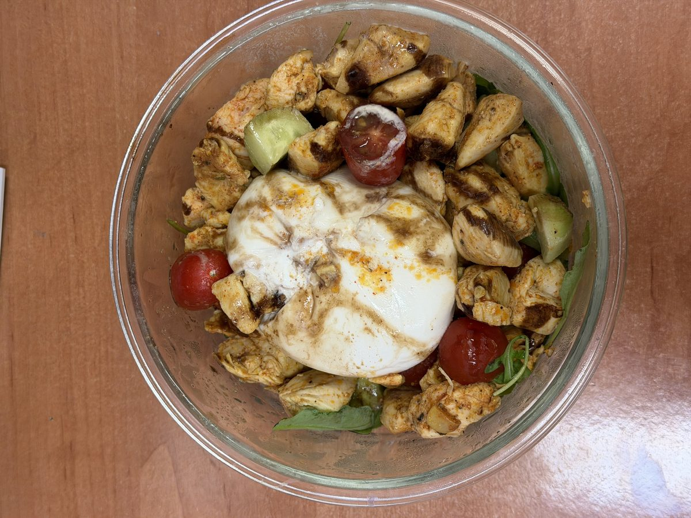
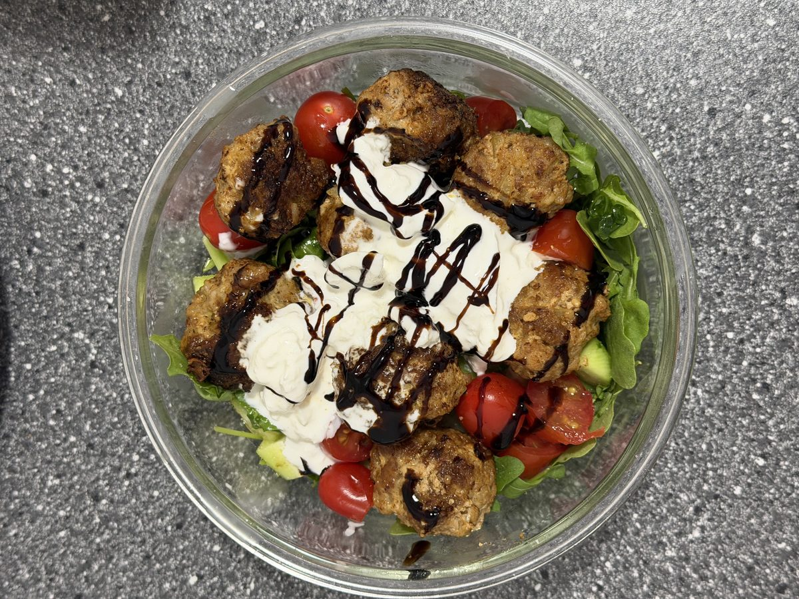
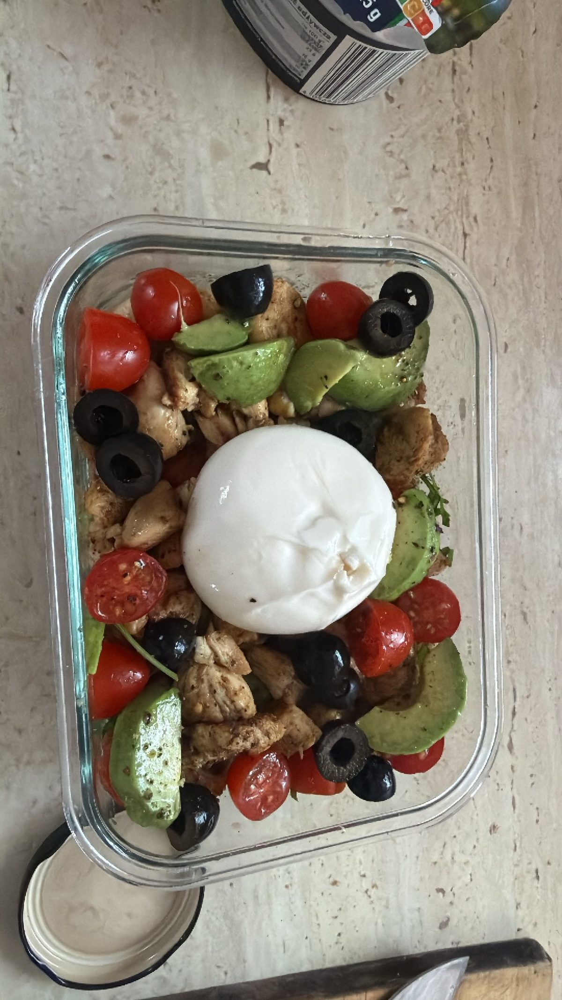

Przepisy
Przepisy niskowęglowodanowe, bogate w warzywa i zdrowe tłuszcze — zgodnie z zasadami, które sami stosujemy na co dzień.
← Wróć do strony głównej
Kawałki grillowanego kurczaka, kremowa burrata, pomidorki koktajlowe, ogórek i rukola, skropione balsamico — sycący zestaw do zabrania ze sobą, bez dodatku węglowodanów.

Domowe klopsiki, świeże listki sałaty, pomidorki koktajlowe i dodatek burraty, całość polana gęstym sosem balsamicznym — pełnowartościowy posiłek w jednym pojemniku.

Kurczak, kremowe awokado, czarne oliwki, pomidorki koktajlowe i burrata — połączenie białka i nienasyconych tłuszczów, idealne do zabrania do pracy.
Jajka smażone na maśle klarowanym, podane z dojrzałym awokado i podduszonym szpinakiem — solidna dawka zdrowych tłuszczów i białka bez zbędnych węglowodanów.
Łosoś pieczony z ziołami, podany z brokułem gotowanym na parze i skropiony oliwą z oliwek — źródło kwasów omega-3 i błonnika bez dodatku zbóż.
Rukola, orzechy włoskie, ser kozi i oliwa z oliwek z odrobiną octu balsamicznego — lekka, sycąca sałatka pełna nienasyconych tłuszczów.